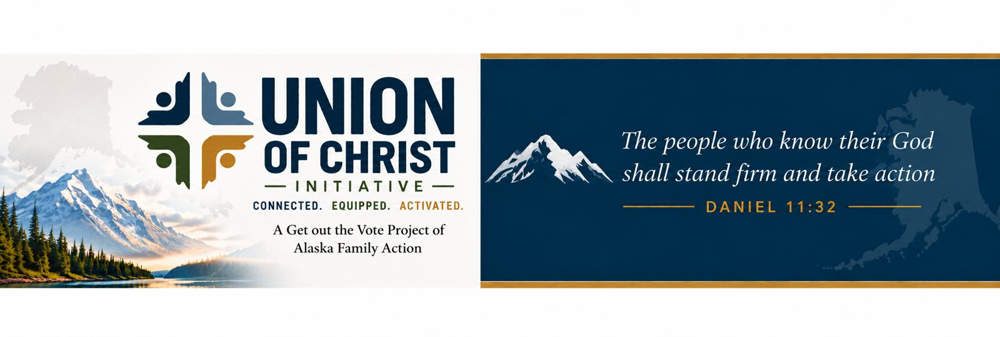

Alaskan Pastors Who Are Personally Endorsing in the November 3rd General Election

“Hi pastors, I think it can be beneficial for pastors to be willing to share their personal voting choices. Here’s why I choose to do it.
When I share my voting list, I make it clear that these are my personal choices—not an endorsement from our church, our board, or our staff.
I do my due diligence. When possible, I meet with candidates personally, ask questions, research their positions and records, and consider where they stand on issues that intersect with my core biblical convictions.
I also don’t believe pastors need to be afraid of being transparent about where they personally land. We regularly encourage people to live out their biblical convictions in every area of life, and civic engagement is one of those areas.
That doesn’t mean everyone in our church has to vote exactly as I do. Thoughtful Christians can reach different conclusions. But I can be clear about my convictions while still respecting someone else’s conscience.
My goal is not to think for people, but to encourage them to pray, do their homework, think biblically, and vote according to their convictions and conscience.”
True North Church
Fairbanks

Pastor Ron Hoffman with Mountain City Church in Anchorage explains in this video why he is personally endorsing and who.
Mountain City Church
Anchorage

How Many People In Your Church Don’t Vote?
We’ll help you find out and help you encourage them to get to the polls.
Research continues to show that huge percentages of Christians do not vote.
As part of our Union of Christ Initiative, we’re providing churches with a secure, private way to see who has and hasn't voted in their congregations.
Although public voter records do not reveal how a church member voted, they do show whether a person participated in an election. Participating churches in the Union of Christ Initiative will be offered a privacy-conscious, secure portal to know who did and did not vote in their congregation while keeping their private membership information under their own control.
Pastors all over Alaska are realizing they can help their members have a greater influence. And it starts with knowing who does and doesn’t vote.
If you are interested in our secure process of helping you know, send an email to jim@akfamily.org or call 907-317-7268.